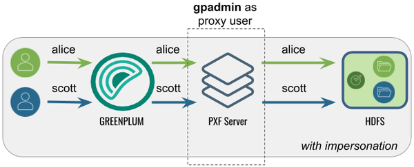
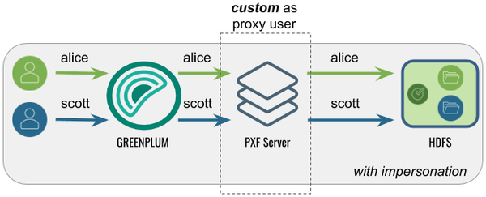
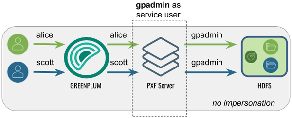
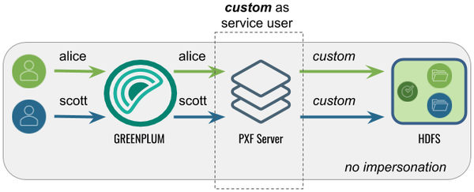

Configuring the Hadoop User, User Impersonation, and Proxying
PXF accesses Hadoop services on behalf of SynxDB end users. Impersonation is a way to present a SynxDB end user identity to a remote system. You can achieve this with PXF by configuring a Hadoop proxy user. When the Hadoop service is secured with Kerberos, you also have the option of impersonation using Kerberos constrained delegation.
When user impersonation is activated (the default), PXF accesses non-secured Hadoop services using the identity of the SynxDB user account that logs in to SynxDB and performs an operation that uses a PXF connector. Keep in mind that PXF uses only the login identity of the user when accessing Hadoop services. For example, if a user logs in to SynxDB as the user jane and then runs SET ROLE or SET SESSION AUTHORIZATION to assume a different user identity, all PXF requests still use the identity jane to access Hadoop services. When user impersonation is activated, you must explicitly configure each Hadoop data source (HDFS, Hive, HBase) to allow PXF to act as a proxy for impersonating specific Hadoop users or groups.
When user impersonation is deactivated, PXF runs all Hadoop service requests as the PXF process owner (usually gpadmin) or the Hadoop user identity that you specify. This behavior provides no means to control access to Hadoop services for different SynxDB users. It requires that this user have access to all files and directories in HDFS, and all tables in Hive and HBase that are referenced in PXF external table definitions.
You configure the Hadoop user and PXF user impersonation setting for a server via the pxf-site.xml server configuration file. Refer to About the pxf-site.xml Configuration File for more information about the configuration properties in this file.
Use Cases and Configuration Scenarios
User, user impersonation, and proxy configuration for Hadoop depends on how you use PXF to access Hadoop, and whether or not the Hadoop cluster is secured with Kerberos.
The following scenarios describe the use cases and configuration required when you use PXF to access non-secured Hadoop. If you are using PXF to access a Kerberos-secured Hadoop cluster, refer to the Use Cases and Configuration Scenarios section in the Configuring PXF for Secure HDFS topic.
Note: These scenarios assume that gpadmin is the PXF process owner.
Accessing Hadoop as the SynxDB User Proxied by gpadmin
This is the default configuration for PXF. The gpadmin user proxies SynxDB
queries on behalf of SynxDB users. The effective user in Hadoop is the
SynxDB user that runs the query.

The following table identifies the pxf.service.user.impersonation and pxf.service.user.name settings, and the PXF and Hadoop configuration required for this use case:
| Impersonation | Service User | PXF Configuration | Hadoop Configuration |
|---|---|---|---|
| true | gpadmin | None; this is the default configuration. | Set the gpadmin user as the Hadoop proxy user as described in Configure Hadoop Proxying. |
Accessing Hadoop as the SynxDB User Proxied by a <custom> User
In this configuration, PXF accesses Hadoop as the SynxDB user proxied by <custom> user. A query initiated by a SynxDB user appears on the Hadoop side as originating from the (<custom> user.
This configuration might be desirable when Hadoop is already configured with a
proxy user, or when you want a user different than gpadmin to proxy SynxDB queries.

The following table identifies the pxf.service.user.impersonation and pxf.service.user.name settings, and the PXF and Hadoop configuration required for this use case:
| Impersonation | Service User | PXF Configuration | Hadoop Configuration |
|---|---|---|---|
| true | <custom> | Configure the Hadoop User to the <custom> user name. | Set the <custom> user as the Hadoop proxy user as described in Configure Hadoop Proxying. |
Accessing Hadoop as the gpadmin User
In this configuration, PXF accesses Hadoop as the gpadmin user. A query initiated by
any SynxDB user appears on the Hadoop side as originating from the gpadmin user.

The following table identifies the pxf.service.user.impersonation and pxf.service.user.name settings, and the PXF and Hadoop configuration required for this use case:
| Impersonation | Service User | PXF Configuration | Hadoop Configuration |
|---|---|---|---|
| false | gpadmin | Turn off user impersonation as described in Configure PXF User Impersonation. | None required. |
Accessing Hadoop as a <custom> User
In this configuration, PXF accesses Hadoop as a <custom> user. A query initiated by any SynxDB user appears on the Hadoop side as originating from the <custom> user.

The following table identifies the pxf.service.user.impersonation and pxf.service.user.name settings, and the PXF and Hadoop configuration required for this use case:
| Impersonation | Service User | PXF Configuration | Hadoop Configuration |
|---|---|---|---|
| false | <custom> | Turn off user impersonation as described in Configure PXF User Impersonation and Configure the Hadoop User to the <custom> user name. | None required. |
Configure the Hadoop User
By default, PXF accesses Hadoop using the identity of the SynxDB user. You can configure PXF to access Hadoop as a different user on a per-server basis.
Perform the following procedure to configure the Hadoop user:
-
Log in to your SynxDB coordinator host as the administrative user:
$ ssh gpadmin@<coordinator> -
Identify the name of the Hadoop PXF server configuration that you want to update.
-
Navigate to the server configuration directory. For example, if the server is named
hdp3:gpadmin@coordinator$ cd $PXF_BASE/servers/hdp3 -
If the server configuration does not yet include a
pxf-site.xmlfile, copy the template file to the directory. For example:gpadmin@coordinator$ cp <PXF_INSTALL_DIR>/templates/pxf-site.xml . -
Open the
pxf-site.xmlfile in the editor of your choice, and configure the Hadoop user name. When impersonation is deactivated, this name identifies the Hadoop user identity that PXF will use to access the Hadoop system. When user impersonation is activated for a non-secure Hadoop cluster, this name identifies the PXF proxy Hadoop user. For example, if you want to access Hadoop as the userhdfsuser1, uncomment the property and set it as follows:<property> <name>pxf.service.user.name</name> <value>hdfsuser1</value> </property>The Hadoop user
hdfsuser1must exist in the Hadoop cluster. -
Save the
pxf-site.xmlfile and exit the editor. -
Use the
pxf cluster synccommand to synchronize the PXF Hadoop server configuration to your SynxDB cluster:gpadmin@coordinator$ pxf cluster sync
Configure PXF User Impersonation
PXF user impersonation is activated by default for Hadoop servers. You can configure PXF user impersonation on a per-server basis. Perform the following procedure to turn PXF user impersonation on or off for the Hadoop server configuration:
-
Navigate to the server configuration directory. For example, if the server is named
hdp3:gpadmin@coordinator$ cd $PXF_BASE/servers/hdp3 -
If the server configuration does not yet include a
pxf-site.xmlfile, copy the template file to the directory. For example:gpadmin@coordinator$ cp <PXF_INSTALL_DIR>/templates/pxf-site.xml . -
Open the
pxf-site.xmlfile in the editor of your choice, and update the user impersonation property setting. For example, if you do not require user impersonation for this server configuration, set thepxf.service.user.impersonationproperty tofalse:<property> <name>pxf.service.user.impersonation</name> <value>false</value> </property>If you require user impersonation, turn it on:
<property> <name>pxf.service.user.impersonation</name> <value>true</value> </property> -
If you activated user impersonation and Kerberos constrained delegation is deactivated (the default), you must configure Hadoop proxying as described in Configure Hadoop Proxying. You must also configure Hive User Impersonation and HBase User Impersonation if you plan to use those services.
-
Save the
pxf-site.xmlfile and exit the editor. -
Use the
pxf cluster synccommand to synchronize the PXF Hadoop server configuration to your SynxDB cluster:gpadmin@coordinator$ pxf cluster sync
Configure Hadoop Proxying
When PXF user impersonation is activated for a Hadoop server configuration and Kerberos constrained delegation is deactivated (the default), you must configure Hadoop to permit PXF to proxy SynxDB users. This configuration involves setting certain hadoop.proxyuser.* properties. Follow these steps to set up PXF Hadoop proxy users:
-
Log in to your Hadoop cluster and open the
core-site.xmlconfiguration file using a text editor, or use Ambari or another Hadoop cluster manager to add or edit the Hadoop property values described in this procedure. -
Set the property
hadoop.proxyuser.<name>.hoststo specify the list of PXF host names from which proxy requests are permitted. Substitute the PXF proxy Hadoop user for<name>. The PXF proxy Hadoop user is thepxf.service.user.namethat you configured in the procedure above, or, if you are using Kerberos authentication to Hadoop, the proxy user identity is the primary component of the Kerberos principal. If you have not explicitly configuredpxf.service.user.name, the proxy user is the operating system user that started PXF. Provide multiple PXF host names in a comma-separated list. For example, if the PXF proxy user is namedhdfsuser2:<property> <name>hadoop.proxyuser.hdfsuser2.hosts</name> <value>pxfhost1,pxfhost2,pxfhost3</value> </property> -
Set the property
hadoop.proxyuser.<name>.groupsto specify the list of HDFS groups that PXF as Hadoop user<name>can impersonate. You should limit this list to only those groups that require access to HDFS data from PXF. For example:<property> <name>hadoop.proxyuser.hdfsuser2.groups</name> <value>group1,group2</value> </property> -
You must restart Hadoop for your
core-site.xmlchanges to take effect. -
Copy the updated
core-site.xmlfile to the PXF Hadoop server configuration directory$PXF_BASE/servers/<server_name>on the SynxDB coordinator host and synchronize the configuration to the standby coordinator host and each SynxDB segment host.
Hive User Impersonation
The PXF Hive connector uses the Hive MetaStore to determine the HDFS locations of Hive tables, and then accesses the underlying HDFS files directly. No specific impersonation configuration is required for Hive, because the Hadoop proxy configuration in core-site.xml also applies to Hive tables accessed in this manner.
HBase User Impersonation
In order for user impersonation to work with HBase, you must activate the AccessController coprocessor in the HBase configuration and restart the cluster. See 61.3 Server-side Configuration for Simple User Access Operation in the Apache HBase Reference Guide for the required hbase-site.xml configuration settings.